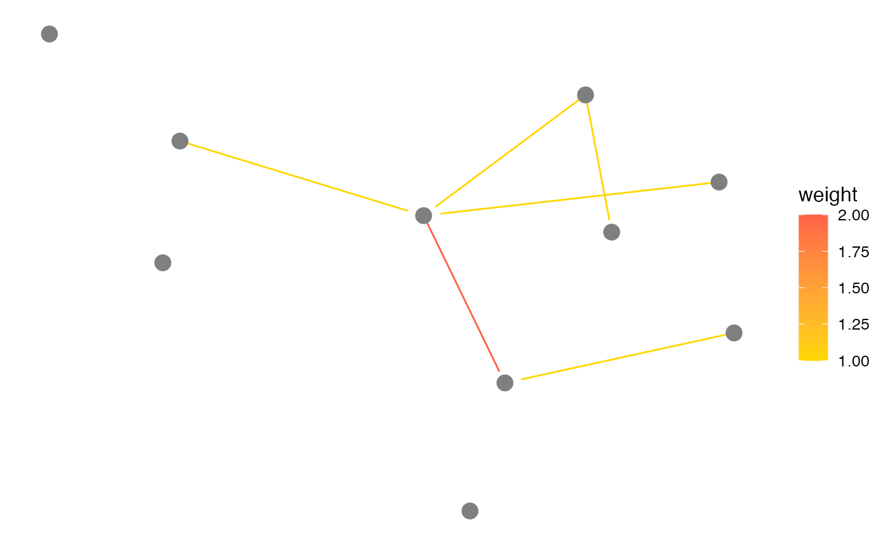

All arguments to this geom are identical to those of
geom_segment, including arrow, which is useful
to plot directed networks in conjunction with the arrow.gap argument
of fortify.network. The curvature, angle and
ncp arguments of geom_curve are also available:
if curvature is set to any value above 0 (the default), the
edges produced by geom_edges will be curved.
geom_edges(
mapping = NULL,
data = NULL,
position = "identity",
arrow = NULL,
curvature = 0,
angle = 90,
ncp = 5,
na.rm = FALSE,
show.legend = NA,
inherit.aes = TRUE,
...
)Set of aesthetic mappings created by aes(). If specified and
inherit.aes = TRUE (the default), it is combined with the default mapping
at the top level of the plot. You must supply mapping if there is no plot
mapping.
The data to be displayed in this layer. There are three options:
If NULL, the default, the data is inherited from the plot
data as specified in the call to ggplot().
A data.frame, or other object, will override the plot
data. All objects will be fortified to produce a data frame. See
fortify() for which variables will be created.
A function will be called with a single argument,
the plot data. The return value must be a data.frame, and
will be used as the layer data. A function can be created
from a formula (e.g. ~ head(.x, 10)).
Position adjustment, either as a string naming the adjustment
(e.g. "jitter" to use position_jitter), or the result of a call to a
position adjustment function. Use the latter if you need to change the
settings of the adjustment.
specification for arrow heads, as created by grid::arrow().
A numeric value giving the amount of curvature. Negative values produce left-hand curves, positive values produce right-hand curves, and zero produces a straight line.
A numeric value between 0 and 180, giving an amount to skew the control points of the curve. Values less than 90 skew the curve towards the start point and values greater than 90 skew the curve towards the end point.
The number of control points used to draw the curve. More control points creates a smoother curve.
If FALSE, the default, missing values are removed with
a warning. If TRUE, missing values are silently removed.
logical. Should this layer be included in the legends?
NA, the default, includes if any aesthetics are mapped.
FALSE never includes, and TRUE always includes.
It can also be a named logical vector to finely select the aesthetics to
display.
If FALSE, overrides the default aesthetics,
rather than combining with them. This is most useful for helper functions
that define both data and aesthetics and shouldn't inherit behaviour from
the default plot specification, e.g. borders().
Other arguments passed on to layer(). These are
often aesthetics, used to set an aesthetic to a fixed value, like
colour = "red" or size = 3. They may also be parameters
to the paired geom/stat.
if (require(network) && require(sna)) {
# rerun if the example does not produce reciprocated ties
n <- network(rgraph(10, tprob = 0.2), directed = TRUE)
# just edges
ggplot(n, aes(x, y, xend = xend, yend = yend)) +
geom_edges(size = 1, colour = "steelblue") +
theme_blank()
# with nodes
ggplot(n, aes(x, y, xend = xend, yend = yend)) +
geom_edges(size = 1, colour = "steelblue") +
geom_nodes(size = 3, colour = "steelblue") +
theme_blank()
# with arrows
ggplot(n, aes(x, y, xend = xend, yend = yend)) +
geom_edges(
size = 1, colour = "steelblue",
arrow = arrow(length = unit(0.5, "lines"), type = "closed")
) +
geom_nodes(size = 3, colour = "steelblue") +
theme_blank()
# with curvature
ggplot(n, aes(x, y, xend = xend, yend = yend)) +
geom_edges(
size = 1, colour = "steelblue", curvature = 0.15,
arrow = arrow(length = unit(0.5, "lines"), type = "closed")
) +
geom_nodes(size = 3, colour = "steelblue") +
theme_blank()
# arbitrary categorical edge attribute
e <- sample(letters[ 1:2 ], network.edgecount(n), replace = TRUE)
set.edge.attribute(n, "type", e)
ggplot(n, aes(x, y, xend = xend, yend = yend)) +
geom_edges(aes(linetype = type),
size = 1, curvature = 0.15,
arrow = arrow(length = unit(0.5, "lines"), type = "closed")
) +
geom_nodes(size = 3, colour = "steelblue") +
theme_blank()
# arbitrary numeric edge attribute (signed network)
e <- sample(-2:2, network.edgecount(n), replace = TRUE)
set.edge.attribute(n, "weight", e)
ggplot(n, aes(x, y, xend = xend, yend = yend)) +
geom_edges(aes(colour = weight),
curvature = 0.15,
arrow = arrow(length = unit(0.5, "lines"), type = "closed")
) +
geom_nodes(size = 3, colour = "grey50") +
scale_colour_gradient(low = "steelblue", high = "tomato") +
theme_blank()
# draw only a subset of all edges
positive_weight <- function(x) {
x[ x$weight >= 0, ]
}
ggplot(n, aes(x, y, xend = xend, yend = yend)) +
geom_edges(aes(colour = weight), data = positive_weight) +
geom_nodes(size = 4, colour = "grey50") +
scale_colour_gradient(low = "gold", high = "tomato") +
theme_blank()
}
#> Loading required package: sna
#> Loading required package: statnet.common
#>
#> Attaching package: ‘statnet.common’
#> The following objects are masked from ‘package:base’:
#>
#> attr, order
#> sna: Tools for Social Network Analysis
#> Version 2.7-2 created on 2023-12-05.
#> copyright (c) 2005, Carter T. Butts, University of California-Irvine
#> For citation information, type citation("sna").
#> Type help(package="sna") to get started.
#> Warning: Using `size` aesthetic for lines was deprecated in ggplot2 3.4.0.
#> ℹ Please use `linewidth` instead.
